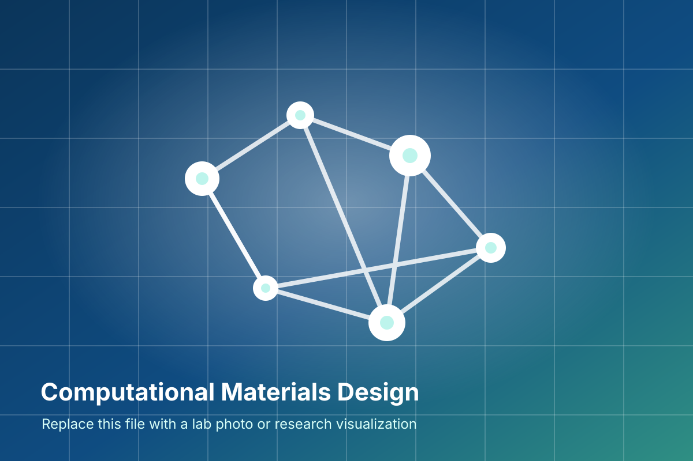

Energy Materials
Computational screening of photovoltaic, hydrogen storage, and battery-related compounds using structure, stability, and performance descriptors.
SCANMAT | Central University of Tamil Nadu
The group uses first-principles theory, high-performance computing, and materials informatics to study structure-property relationships in complex solids, with emphasis on phase stability, electronic structure, and application-driven materials discovery.
Research
Content is grouped by theme so lab members can update each area independently as projects evolve.
Computational screening of photovoltaic, hydrogen storage, and battery-related compounds using structure, stability, and performance descriptors.
Spin-polarized calculations on Heusler alloys, multiferroics, magnetocaloric materials, and pressure-driven phase transformations.
Density functional theory studies of bonding, band structures, optical response, transport behavior, and correlated electronic states.
People
Replace names, roles, emails, and research topics here as the group changes. Photos can be added later without changing the page structure.
Principal Investigator and Head, SCANMAT Center
Computational solid-state chemistry and condensed matter physics, with broad work on functional materials, electronic structure, and materials design.
raviphy@cutn.ac.in Google ScholarPublications
Keep this list concise on the homepage. A full publication archive can be added as a separate page later.
G. Kruthika and P. Ravindran
S. Kiruthika and P. Ravindran
J. B. Sudharsan, M. Srinivasan, P. Ramasamy, M. K. Choudhary and P. Ravindran
P. Ravindran, R. Vidya, A. Kjekshus, H. Fjellvag and O. Eriksson
Gallery and News

May 2026
Cluster workflows and structural manipulation scripts continue to support faster exploration of phase transition pathways.
March 2026
Prof. P. Ravindran recognized for sustained scientific contributions in applied physics and computational materials research.